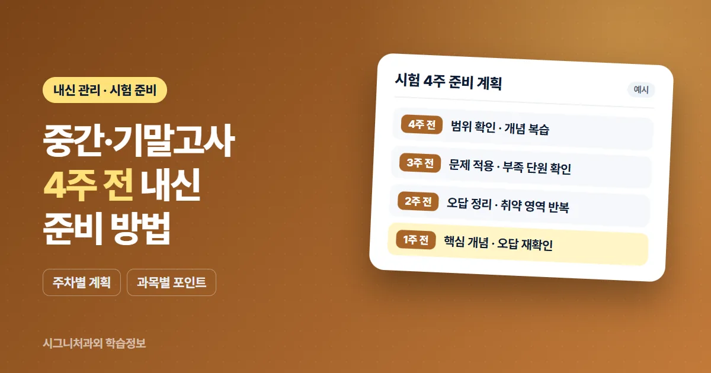

- 4주 전: 시험 범위와 현재 상태를 확인하고 개념 복습을 시작합니다.
- 3주·2주 전: 문제 적용과 오답 정리로 부족한 단원을 보완합니다.
- 1주 전: 새로운 내용을 늘리기보다 핵심 개념과 오답을 다시 확인합니다.
시험 4주 전부터 단계를 나누는 이유
시험이 가까워지면 무엇부터 해야 할지 막막해지기 쉽습니다. 남은 기간을 주 단위로 나누고 단계마다 할 일을 정해 두면, 시험 직전에 공부가 몰리는 부담을 줄일 수 있습니다.
다만 시험 범위와 일정은 학교·학년·과목마다 다릅니다. 아래 흐름은 일반적인 예시이므로 학생의 학교 일정에 맞춰 조정해 사용하세요.
시험 4주 전: 범위 확인과 개념 복습 시작
- 시험 범위 확인 — 학교 공지와 수업 안내를 기준으로 과목별 시험 범위와 일정을 정리합니다.
- 현재 상태 확인 — 범위 안에서 이해가 부족한 단원과 이미 익숙한 단원을 나누어 봅니다.
- 개념 복습 시작 — 교과서와 수업 자료를 중심으로 핵심 개념을 다시 정리합니다.
시험 3주 전: 문제 적용과 부족한 단원 확인
- 문제 적용 — 정리한 개념을 문제에 적용해 보며 실제로 풀 수 있는지 확인합니다.
- 부족한 단원 확인 — 문제를 풀면서 막히는 단원을 표시해 두고, 다음 단계에서 집중할 부분을 정합니다.
시험 2주 전: 오답 정리와 취약 영역 반복
- 오답 정리 — 틀린 문제의 원인이 개념 이해, 계산 실수, 문제 해석 중 어디에 있는지 구분합니다.
- 취약 영역 반복 — 자주 틀리는 단원과 유형을 다시 풀어 보며 같은 실수를 줄입니다.
시험 1주 전: 핵심 개념과 오답 재확인
- 핵심 개념 복습 — 범위 전체의 핵심 개념을 짧게 다시 훑어봅니다.
- 오답 재확인 — 정리해 둔 오답을 다시 풀어 보고, 풀이 과정을 스스로 설명할 수 있는지 확인합니다.
- 새로운 내용을 과도하게 늘리지 않기 — 새 문제집을 시작하기보다 지금까지 정리한 내용을 확실히 하는 데 집중합니다.
과목별 준비 포인트
과목마다 시험 준비에서 중점을 두는 부분이 조금씩 다릅니다. 구체적인 시험 범위와 출제 방식은 학교마다 다르므로 학교 안내를 기준으로 확인해 주세요.
수학
- 개념과 공식이 왜 성립하는지 먼저 정리합니다.
- 교과서와 학교 교재의 문제를 중심으로 유형별 풀이를 연습합니다.
- 서술형에 대비해 풀이 과정을 끝까지 써 보는 연습을 합니다.
영어
- 교과서 본문과 수업 시간에 다룬 자료를 중심으로 정리합니다.
- 시험 범위의 문법과 어휘를 본문 문장과 함께 복습합니다.
- 본문 내용을 이해하고 서술형 문장을 직접 써 봅니다.
국어
- 수업 시간에 다룬 작품과 지문의 분석 내용을 다시 정리합니다.
- 시험 범위의 문법 개념을 예문과 함께 확인합니다.
- 서술형에 대비해 핵심 내용을 자신의 말로 정리해 봅니다.
과학
- 개념과 원리를 이해한 뒤 용어를 정리합니다.
- 그림, 그래프, 표를 해석하는 연습을 합니다.
- 수업에서 다룬 실험의 과정과 결과를 정리합니다.
중학생과 고등학생은 무엇이 다를까요?
중학생은 처음으로 정기 시험을 본격적으로 준비하는 경우가 많아, 시험 범위를 나누어 계획하는 방법 자체를 익히는 것이 중요합니다.
고등학생은 과목 수와 학습 범위가 넓어지는 만큼, 과목별 복습 시간을 미리 배분하고 내신과 학습 목표를 함께 고려해 계획하는 것이 좋습니다.
관련 과목
과목별 1:1 수업 안내는 아래 페이지에서 확인할 수 있습니다.
자주 묻는 질문
시험 4주 전에 시작해도 늦지 않나요?
준비를 시작하기에 늦은 시기가 정해져 있는 것은 아닙니다. 남은 기간과 시험 범위, 현재 학습 상태를 먼저 확인하고 그에 맞게 계획을 세우는 것이 중요합니다.
시험 범위는 어떻게 확인하나요?
시험 범위와 일정은 학교마다 다르므로 학교 공지와 수업 시간 안내를 기준으로 확인하는 것이 정확합니다. 1:1 수업을 받는다면 학생이 확인한 학교 시험 범위를 기준으로 준비 계획을 함께 세울 수 있습니다.
오답 정리는 어떻게 하는 게 좋나요?
틀린 문제를 다시 옮겨 적는 것보다 왜 틀렸는지 원인을 구분하는 것이 중요합니다. 개념 이해, 계산 실수, 문제 해석 등 원인을 나누어 표시하고, 시간을 두고 다시 풀어 보며 스스로 설명할 수 있는지 확인해 보세요.
시험 직전에는 무엇을 공부하나요?
시험 직전에는 새로운 문제를 많이 늘리기보다 핵심 개념과 정리해 둔 오답을 다시 확인하는 데 집중하는 것이 일반적입니다. 충분한 휴식과 컨디션 관리도 준비의 일부입니다.
시험 기간에 과외 수업은 어떻게 진행되나요?
일반적으로 시험 기간에는 시험 범위 복습과 문제 적용, 오답 점검의 비중을 높이는 방향으로 수업을 조정하는 경우가 많습니다. 시험 기간 수업 일정과 운영 방식은 학생 상황과 수업 조건에 따라 달라질 수 있으며 상담 시 확인 후 안내드립니다.
이 글의 준비 흐름은 일반적인 참고 예시이며, 특정 시험 결과를 보장하지 않습니다. 학생의 학교 일정과 현재 학습 상태에 맞춰 조정해 주세요.
학년과 과목, 학교 시험 일정과 현재 학습 상황을 남겨주시면 상담 내용을 확인해 안내드립니다.